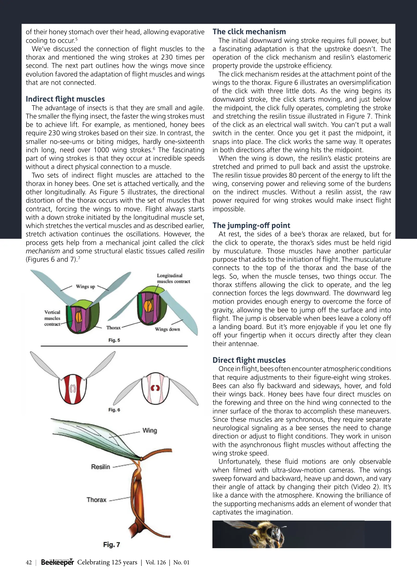

of their honey stomach over their head, allowing evaporative
cooling to occur.5
We’ve discussed the connection of flight muscles to the
thorax and mentioned the wing strokes at 230 times per
second. The next part outlines how the wings move since
evolution favored the adaptation of flight muscles and wings
that are not connected.
Indirect flight muscles
The advantage of insects is that they are small and agile.
The smaller the flying insect, the faster the wing strokes must
be to achieve lift. For example, as mentioned, honey bees
require 230 wing strokes based on their size. In contrast, the
smaller no-see-ums or biting midges, hardly one-sixteenth
inch long, need over 1000 wing strokes.6 The fascinating
part of wing strokes is that they occur at incredible speeds
without a direct physical connection to a muscle.
Two sets of indirect flight muscles are attached to the
thorax in honey bees. One set is attached vertically, and the
other longitudinally. As Figure 5 illustrates, the directional
distortion of the thorax occurs with the set of muscles that
contract, forcing the wings to move. Flight always starts
with a down stroke initiated by the longitudinal muscle set,
which stretches the vertical muscles and as described earlier,
stretch activation continues the oscillations. However, the
process gets help from a mechanical joint called the click
mechanism and some structural elastic tissues called resilin
(Figures 6 and 7).7
The click mechanism
The initial downward wing stroke requires full power, but
a fascinating adaptation is that the upstroke doesn’t. The
operation of the click mechanism and resilin’s elastomeric
property provide the upstroke efficiency.
The click mechanism resides at the attachment point of the
wings to the thorax. Figure 6 illustrates an oversimplification
of the click with three little dots. As the wing begins its
downward stroke, the click starts moving, and just below
the midpoint, the click fully operates, completing the stroke
and stretching the resilin tissue illustrated in Figure 7. Think
of the click as an electrical wall switch. You can’t put a wall
switch in the center. Once you get it past the midpoint, it
snaps into place. The click works the same way. It operates
in both directions after the wing hits the midpoint.
When the wing is down, the resilin’s elastic proteins are
stretched and primed to pull back and assist the upstroke.
The resilin tissue provides 80 percent of the energy to lift the
wing, conserving power and relieving some of the burdens
on the indirect muscles. Without a resilin assist, the raw
power required for wing strokes would make insect flight
impossible.
The jumping-off point
At rest, the sides of a bee’s thorax are relaxed, but for
the click to operate, the thorax’s sides must be held rigid
by musculature. Those muscles have another particular
purpose that adds to the initiation of flight. The musculature
connects to the top of the thorax and the base of the
legs. So, when the muscle tenses, two things occur. The
thorax stiffens allowing the click to operate, and the leg
connection forces the legs downward. The downward leg
motion provides enough energy to overcome the force of
gravity, allowing the bee to jump off the surface and into
flight. The jump is observable when bees leave a colony off
a landing board. But it’s more enjoyable if you let one fly
off your fingertip when it occurs directly after they clean
their antennae.
Direct flight muscles
Once in flight, bees often encounter atmospheric conditions
that require adjustments to their figure-eight wing strokes.
Bees can also fly backward and sideways, hover, and fold
their wings back. Honey bees have four direct muscles on
the forewing and three on the hind wing connected to the
inner surface of the thorax to accomplish these maneuvers.
Since these muscles are synchronous, they require separate
neurological signaling as a bee senses the need to change
direction or adjust to flight conditions. They work in unison
with the asynchronous flight muscles without affecting the
wing stroke speed.
Unfortunately, these fluid motions are only observable
when filmed with ultra-slow-motion cameras. The wings
sweep forward and backward, heave up and down, and vary
their angle of attack by changing their pitch (Video 2). It’s
like a dance with the atmosphere. Knowing the brilliance of
the supporting mechanisms adds an element of wonder that
captivates the imagination.
42 |
Celebrating 125 years | Vol. 126 | No. 01